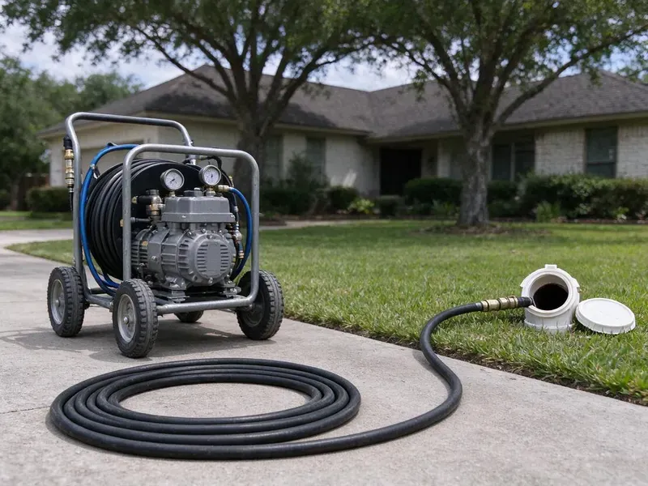

Hydro Jetting in St. Clair Shores, MI
For effective drain clearing in St. Clair Shores, MI, hydro jetting is the advanced solution. It tackles grease, roots, and mineral deposits that traditional snaking can't.
- Same-Day Jetting Available
- Quick, Effective Cleaning
- High-Pressure Cleaning
- Removes Stubborn Buildup

Need Powerful Drain Cleaning? Get Hydro Jetting Service in St. Clair Shores, MI.
One complete jetting often replaces years of repeat snaking visits.
Hydro Jetting in St. Clair Shores, MI for Grease, Scale and Root Problems
CHV Plumbing always runs a camera before jetting to check pipe material and condition. That way we can set the pressure and choose the nozzle that cleans effectively without harming older cast iron or clay.
Our expertise includes:
- High-pressure water jetting for all pipe sizes
- Preventative maintenance hydro jetting for businesses
- Pre and post jetting video inspection with recordings

Additional Drain Services Services in St. Clair Shores, MI
From stubborn kitchen clogs to main sewer backups, our drain services in St. Clair Shores, MI clear the line and keep it clear with camera-verified results.


Customers
Why Choose CHV Plumbing for Hydro Jetting in St. Clair Shores, MI?
Hydro jetting is a better method for truly cleaning your pipes, not just poking a hole through a blockage. It is especially useful for older homes in St. Clair Shores and for dealing with mineral buildup.
- Preventative Care, Regular hydro jetting can prevent future clogs and extend the life of your plumbing system.
- Prevents Recurrence, By thoroughly cleaning the pipe walls, hydro jetting significantly reduces the chances of blockages forming again quickly.
- Tough Blockages, It reliably breaks apart grease, mineral scale, sludge, and even invasive tree roots that snaking cannot fully dislodge.
Citywide Coverage
CHV Plumbing is proud to offer complete hydro jetting service across every neighborhood of St. Clair Shores. From older districts with aging pipes to newer developments, we understand the plumbing challenges faced by residents here.
Experienced Team
Our team of licensed plumbers has broad experience with hydro jetting, for effective and safe operation on your property. We are trained to assess pipe conditions using camera inspections before jetting, which is crucial for the many pipe materials found in St. Clair Shores.
Safety-First Approach
High-pressure water can injure people if misused, so our techs use protective gear and keep hands clear of the hose and nozzle. We secure access points so water does not spray back into your home.
Trusted Certified St. Clair Shores Plumbing Services Professionals
At CHV Plumbing, we take pride in providing licensed, certified plumbing services throughout St. Clair Shores, MI. Backed by leading industry credentials, our experienced plumbers combine technical skill with genuine customer care. Whether it is repair, installation, or maintenance, we follow strict safety and quality standards to deliver lasting results you can trust.
Call Us Now PHCC Plumbing Contractor Recognition
PHCC Plumbing Contractor Recognition Better Business Bureau (BBB) Accreditation
Better Business Bureau (BBB) Accreditation Angi Certified Pro
Angi Certified Pro ISO 9001 Quality Management Certification
ISO 9001 Quality Management CertificationPowerful Hydro Jetting Services in St. Clair Shores, MI
Preventive Maintenance Jetting in St. Clair Shores
If your line has a history of clogs, a maintenance plan can keep it clear. We schedule jetting every 12 to 24 months for homes and more often for busy commercial kitchens. Regular cleaning prevents the buildup from ever reaching the point of a backup. It also gives us a chance to camera the line and catch new problems early. Maintenance customers get priority scheduling.

Sewer Line Descaling with Hydro Jetting in St. Clair Shores
Over time, mineral deposits and other materials can build up on the interior walls of sewer lines, forming a tough scale. This reduces pipe diameter and can lead to repeat clogs. Well water across much of the state tends to be harder and often carries iron, which discolors sinks and clogs aerators. Hydro jetting is the most effective method for sewer line descaling, using powerful water jets to break down and flush away these mineral deposits, restoring the pipe's full carrying capacity and preventing future buildup.
Residential Hydro Jetting in St. Clair Shores
For homeowners in St. Clair Shores facing recurring clogs, slow drains, or foul odors, residential hydro jetting is a powerful solution. Our service targets common household causes like grease buildup from kitchens, hair and soap scum from bathrooms, and even laundry detergent residue. We use specialized nozzles and adjustable pressure to safely clear blockages in pipes ranging from small kitchen lines to main sewer connections, restoring full drainage and preventing future issues.
Scale Removal in Cast Iron Pipes in St. Clair Shores
Cast iron drains in older homes build up rust tubercles and mineral scale, and hard water speeds that process. Jetting with the right nozzle can strip much of this buildup and restore flow. We keep pressure in a safe range for aged iron and watch the camera for thin spots. This cleaning is also the standard prep step before pipe lining. Clean pipe walls help a liner bond correctly.
Hydro Jetting for Hard Water Scale in St. Clair Shores
Well water across much of the state tends to be harder and often carries iron, which discolors sinks and clogs aerators. Even moderate mineral content can lead to scale buildup in pipes over many years. This scale can restrict flow and catch other debris, leading to clogs. Hydro jetting is very effective at breaking down and flushing out these hard mineral deposits, restoring the full diameter of your pipes. This is a better method compared to chemical treatments for scale removal.
Commercial Hydro Jetting in St. Clair Shores, MI
Businesses in St. Clair Shores, MI often deal with high volumes of waste and specific types of buildup, such as food grease in restaurants or industrial debris. Our commercial hydro jetting is designed for the larger, more complex plumbing systems found in commercial properties. We effectively clear heavily impacted lines, preventing costly downtime and keeping your business running smoothly. This service is crucial for maintaining health code compliance and avoiding severe backups in high-usage settings.
Hydro Jetting Before Pipe Lining in St. Clair Shores, MI
Cured-in-place pipe lining needs a clean surface to adhere and seal correctly. We jet the host pipe to remove roots, scale and debris, then camera it to confirm it is ready. Any heavy obstructions are cut out before the liner is installed. Skipping this step can lead to wrinkles or poor bonding. Proper prep is part of why lined pipe can last for decades.

Residential Sewer Line Jetting in St. Clair Shores
Main sewer lines in homes are usually 3 or 4 inches and can collect years of grease, soap, mineral scale and roots. We feed jetting hose through a cleanout and work it toward the street, cleaning in passes. Rear-facing jets pull the nozzle forward while forward jets loosen heavy blockages. The water carries debris down to the city main. A camera run afterward shows the pipe walls clean and clear.
Expert Hydro Jetting Services Near Me in St. Clair Shores, MI
If you are searching for hydro jetting near me in St. Clair Shores, MI, look no further than CHV Plumbing. Our local team is positioned to provide prompt and efficient service throughout the metro area. We understand the plumbing challenges of Michigan homes and businesses and are ready to tackle your toughest drain issues.
Being local means we know which neighborhoods have older cast iron or clay pipe and which have newer PVC. That helps us choose safe pressure settings and the correct nozzle. It also means faster arrival times when you need help.
CHV Plumbing at a Glance
- Fully licensed plumbing team covering St. Clair Shores, MI
- Same-day appointments and 24/7 emergency response
- Clear written estimates, no hidden fees
- 4.9-star rated by 670+ Michigan customers
St. Clair Shores Map
St. Clair Shores Information
- Population
- 57,548
- Area codes
- 586/810/734
- Service area
- St. Clair Shores and communities within 40 miles
- Nearby
- Roseville, Warren, Sterling Heights, Detroit
Hydro jetting is particularly important for homes in St. Clair Shores, MI due to tree root intrusion into sewer lines and the buildup of mineral deposits and grease common in older plumbing systems.
Expert Services
Trust our professionals for reliable CHV Plumbing solutions in St. Clair Shores, MI.
Our Specialized Plumbing Services in St. Clair Shores, MI
At CHV Plumbing, we provide a complete range of plumbing services across St. Clair Shores, MI. From leak detection to full system installations, our team ensures fast, precise, and affordable service for both residential and commercial properties. Explore our core services below:


How Our Hydro Jetting Process Works in St. Clair Shores, MI
Our hydro jetting process is thorough and designed for maximum effectiveness while protecting your plumbing system.
Request a Quote
Call (810) 380-5918 to schedule an appointment for your hydro jetting service. Our customer service team will gather initial information about your drain issues and set up a convenient time for a plumber to visit.
Initial Inspection
Before any jetting begins, our technician will perform a camera inspection of your pipes. This lets us accurately diagnose the blockage type and assess the pipe's condition, confirming hydro jetting is the right solution for your St. Clair Shores property.
Hydro Jetting
Using professional equipment, we insert a high-pressure hose with a specialized nozzle into your drain line. Water jets scour the pipe walls, breaking apart and flushing out grease, roots, scale, and other debris, restoring full flow.
Frequently Asked Questions About Hydro Jetting in St. Clair Shores
The cost of hydro jetting in St. Clair Shores, MI typically ranges from $300 to $800, depending on the severity of the clog, the length and diameter of the pipe, and ease of access. More complex jobs, like main sewer line descaling or extensive root removal, may be on the higher end. We provide a clear quote after an initial inspection.
A thorough jetting often keeps a line clear for a year or more, depending on use and roots. Lines with heavy root intrusion may require maintenance or a repair.
CHV Plumbing stands behind our hydro jetting in St. Clair Shores, MI. We usually offer a warranty on our workmanship, with the length depending on the service and nature of the clog. We will discuss all warranty details with you before starting any work.
Drain snaking uses a cable with an auger that punches a hole through a blockage to restore some flow. Hydro jetting, however, uses high-pressure water to fully scour the inside of the pipe, removing all buildup and restoring the pipe to a near-new condition. Hydro jetting offers a more complete and longer-lasting clean.
While hydro jetting effectively removes existing tree roots from your sewer line, it does not prevent new roots from growing back. For a long-term solution to recurring root intrusion, we might recommend trenchless sewer repair or pipe replacement, which we can discuss during our assessment.
The duration of a hydro jetting service in St. Clair Shores varies depending on the severity and location of the clog. A typical residential drain might take 1 to 2 hours, while a major sewer line or commercial job could take 3 to 4 hours or more. Our technicians work quickly to minimize disruption.
Hydro jetting is very effective against almost all types of clogs. It can break through solid obstructions like tree roots, flush out heavy grease and food buildup, clear mineral scale, and remove compacted sludge and debris that traditional snaking often misses.
While hydro jetting is very powerful, it is generally safe for most sound plumbing systems, including PVC, cast iron, and concrete pipes. However, it is not recommended for severely damaged, corroded, or fragile pipes, which is why a pre-jetting camera inspection by CHV Plumbing is crucial to assess pipe integrity and prevent further damage.
What People Are Saying About Our Plumbing Experts?

Emily R.
I called CHV Plumbing for plumbing repair, and the technician was fast, polite, and thorough. They explained the problem clearly and fixed it the same day. I will definitely hire them again. Highly recommended!
Plumbing Repair · Warren, MI
Patricia H.
We had a slab leak that two other companies could not find. CHV Plumbing located it in under an hour, explained our options, and the price matched the quote to the dollar.
Slab Leak Repair · Warren, MI
Daniel K.
A pipe burst at 11 pm and they actually answered. The plumber showed up within the hour, shut everything down, and had us back to normal the next morning. Could not ask for more.
Emergency Plumbing · Detroit, MI
Mark T.
When our office needed drain cleaning, CHV Plumbing provided quick, reliable service. The plumber arrived on time and made sure every drain flowed perfectly before leaving. Very satisfied.
Drain Cleaning · Detroit, MI
Sofia M.
Two new toilets installed in one visit, no mess left behind, and the tech even adjusted a faucet he noticed was dripping. Fair pricing and really friendly.
Toilet Installation · Detroit, MI
James P.
Our commercial plumbing system had a leak under the sink, and CHV Plumbing handled it professionally. The plumbers arrived quickly and restored everything without disruption to our customers.
Commercial Plumbing · St. Clair Shores, MI